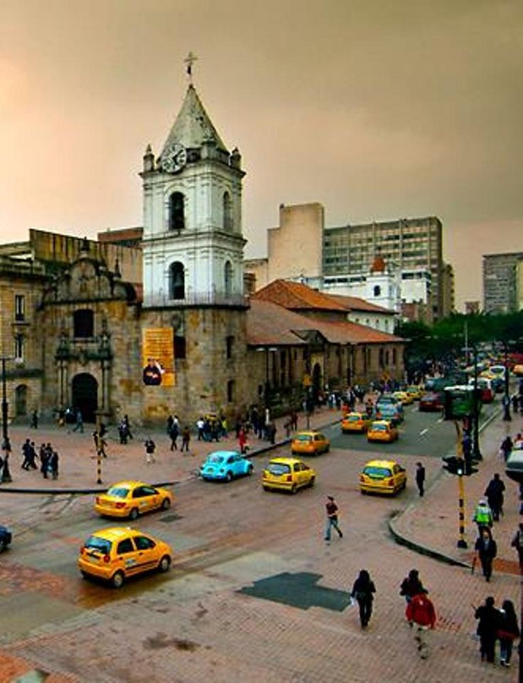
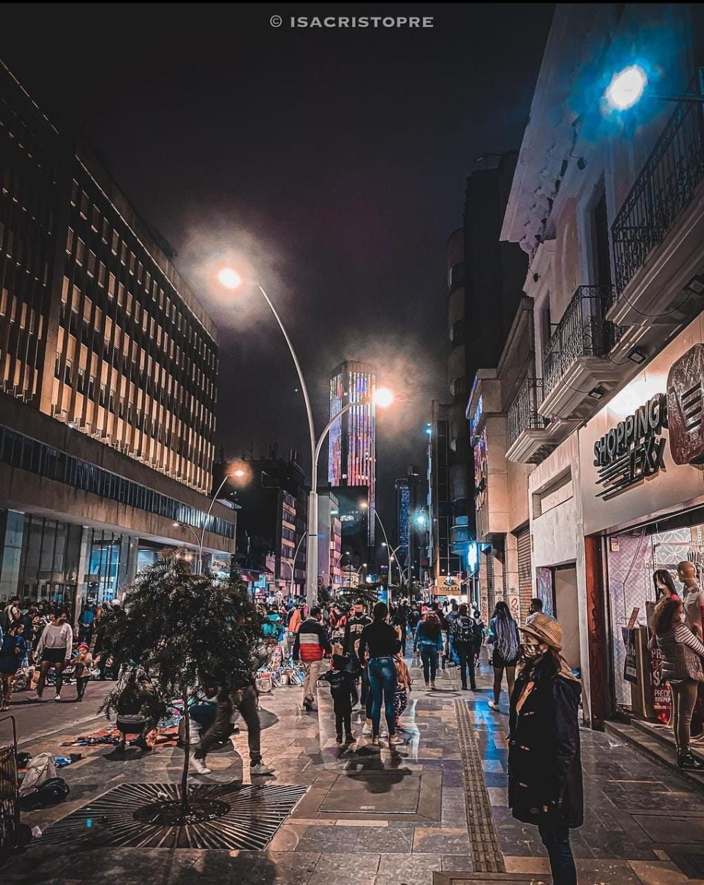
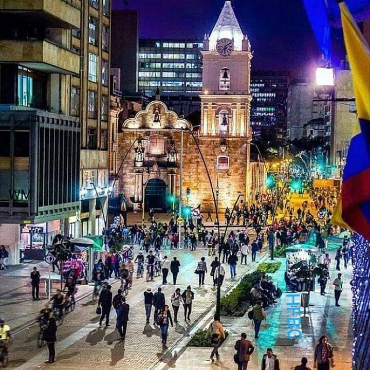
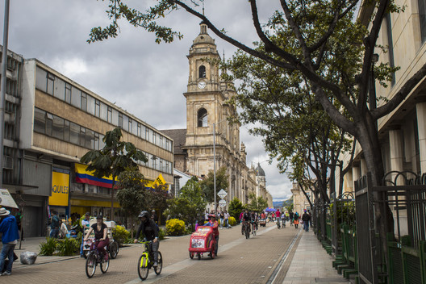
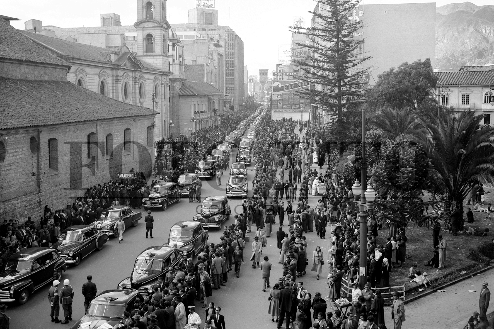
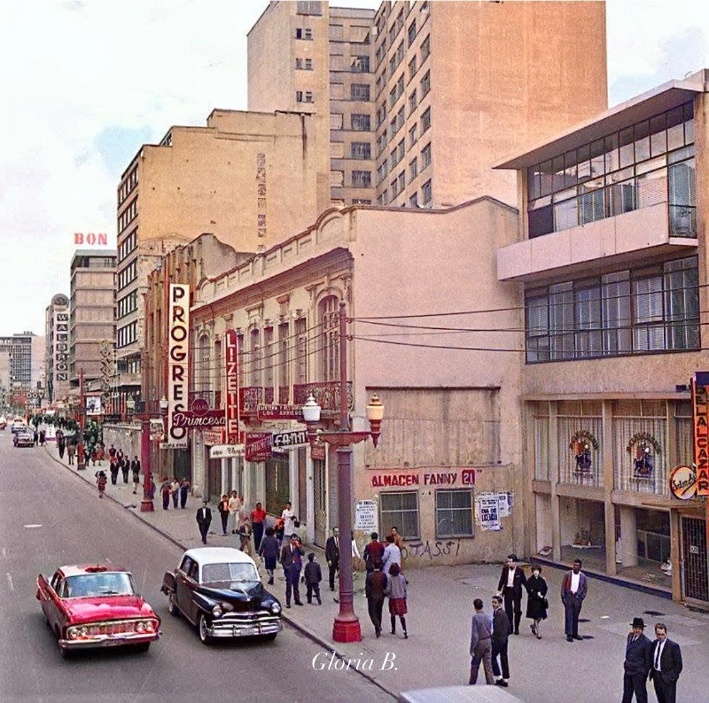
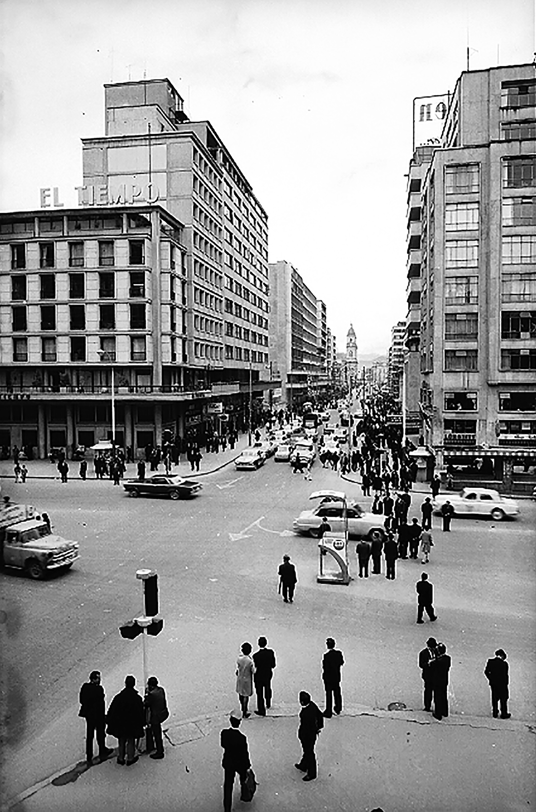
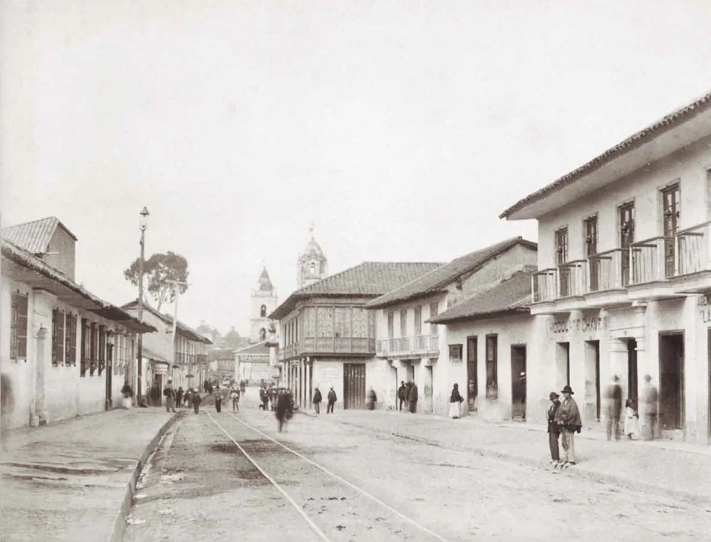
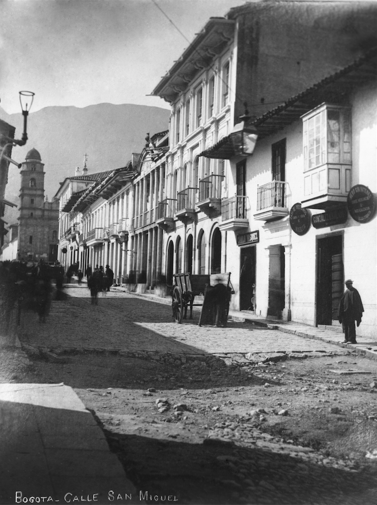
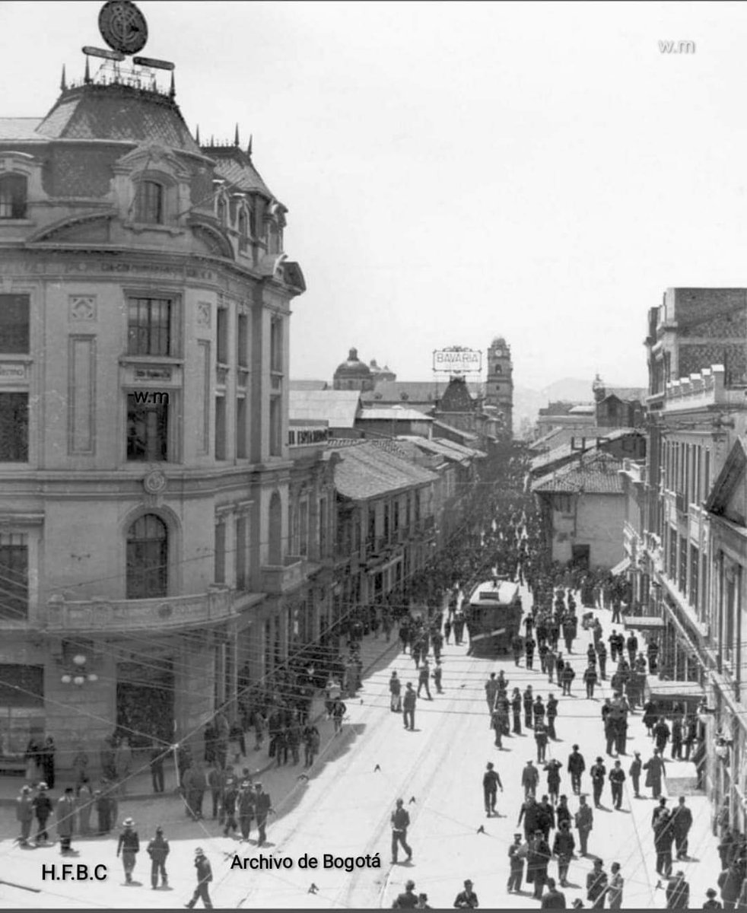

Siglo XXI · Hoy
La Séptima hoy
La calle sigue viva: marchas, arte callejero, memoria y transformación.





Carrera Séptima · Bogotá · Siglos XIX–XXI
Fotos antiguas, imágenes actuales, videos del recorrido
y comparativas entre el ayer y el hoy de la Séptima.
Siglos XIX · XX
Imágenes de archivo que retratan la Carrera Séptima en sus distintas épocas.






Siglo XXI · Hoy
La calle sigue viva: marchas, arte callejero, memoria y transformación.




Registros en movimiento
Fragmentos audiovisuales que capturan la energía y la memoria de la Carrera Séptima.
Del Septimazo a la Plaza de Bolívar: un recorrido visual por el corredor histórico más emblemático de Bogotá.
Imágenes de archivo del 9 de abril de 1948 y cómo la Séptima se reconstruyó tras el incendio.
La Carrera Séptima peatonal cada domingo: música, arte, performance y memoria colectiva bogotana.
Pasado · Presente
Desliza para comparar cómo han cambiado los puntos más emblemáticos de la Séptima.
El corazón institucional de Bogotá ha cambiado de aspecto en múltiples ocasiones. El edificio del Capitolio y la Catedral Primada permanecen, pero el espacio público ha sido radicalmente transformado.
Donde antes circulaban tranvías y automóviles, hoy camina la gente. La peatonalización de la Séptima, completada en varios tramos, transformó su dinámica urbana por completo.
La antigua Penitenciaría Central, construida en 1874, se convirtió en museo en 1948. Su fachada neogótica de ladrillo rojo permanece casi intacta, testigo mudo de más de un siglo de historia nacional.
Ya conoces el archivo
Entra al mapa interactivo y recorre la Séptima punto por punto,
con historias, imágenes y memoria en cada esquina.